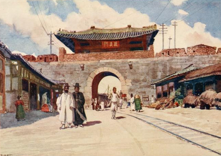
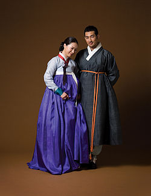
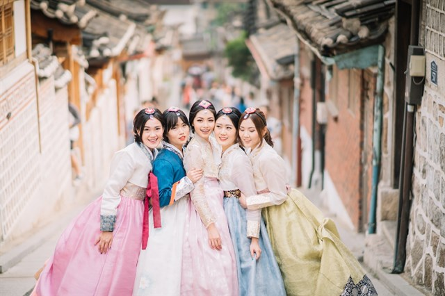
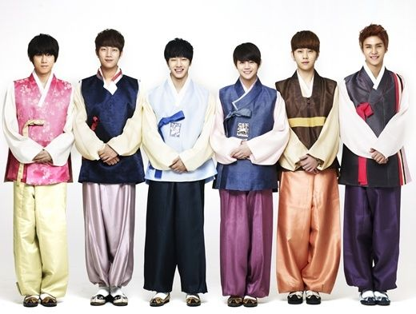

Seúl

Seúl es la capital de Corea del Sur desde la creación de esta república en 1948, la capital histórica de Corea desde hace más de 600 años y la ciudad más poblada de la península de Corea.
Situada en el noroeste del país, a unos 50 kilómetros de la zona desmilitarizada que separa las dos Coreas, forma una unidad administrativa propia dentro del Estado. Está atravesada por el río Han.
Hoy en día, Seúl es considerada una ciudad global, resultado de una explosión de crecimiento económico conocido como el Milagro del río Han, que transformó las cenizas producidas por los bombardeos de la Guerra de Corea en la cuarta economía metropolitana del mundo con un PIB de 773 900 millones de dólares estadounidenses, solo por detrás de Tokio, Nueva York y Los Ángeles.
Con unos 10 millones de habitantes en la ciudad propiamente dicha, y 24,5 millones en toda el área metropolitana, que incluye el puerto de Incheon y la provincia de Gyeonggi, es la cuarta área metropolitana más grande del mundo.
Historia
La ciudad tiene su origen en tiempos del reino de Baekje, uno de los Tres Reinos de Corea. Wirye-seong, la capital de este reino, se comenzó a colonizar en el año 17 a. C. Se cree que su ubicación estaba dentro de los límites de la actual Seúl, y que sus restos podrían estar en Pungnap Toseong o en Mongchon Toseong.
El control de Wirye-seong pasó a la dinastía Goguryeo en el siglo V, y a la Silla en el siglo VI. Durante la dinastía Goguryeo se le conoció como Hanseong (漢城, "ciudad fortificada [del río] Han "). En 1394 se convirtió en la capital de la dinastía Joseon, con el nombre de Hanyang (漢陽).
En el siglo XI la dinastía Koryo, que sucedió a la Silla, construyó un palacio en Seúl, que fue nombrado "la Capital del Sur". En el siglo XIV, cuando la dinastía Joseon reemplazó a la Koryo, Seúl se convirtió en la capital, comenzando su planificación urbanística, hasta su caída en 1910 a manos de los japoneses; actualmente aún se conservan los palacios reales de la dinastía Joseon.
A finales del siglo XIX hubo algunos esfuerzos de modernización que convirtieron a Seúl en la primera ciudad de Asia Oriental en tener al mismo tiempo electricidad, tranvía, agua y red telefónica y de telégrafos.1 A principios del siglo XX, durante el periodo colonial japonés, la ciudad se llamó Gyeongseong (경성, "Ciudad Capital"; en japonés: Keijō (京城)).
Tras la independencia en 1946, los coreanos renombraron a la ciudad Seúl (que también significa "Ciudad Capital" en coreano). En 1949, la ciudad fue segregada de la provincia de Gyeonggi y se le concedió el estatus de "Ciudad Especial de Seúl". En 1950, durante la Guerra de Corea, fue ocupada por las fuerzas norcoreanas y destruida casi por completo, siendo recuperada por las fuerzas de la ONU el 14 de marzo de 1951.
Tras la guerra, que destruyó 191 000 edificios, 55 000 hogares y 1000 fábricas, emigró a la ciudad una avalancha de refugiados que aumentó su población hasta los 2,5 millones de habitantes, más de la mitad de ellos, sin hogar. Seúl fue el centro de un inmenso esfuerzo de reconstrucción y modernización, debido principalmente a la necesidad, pero también en parte a la naturaleza simbólica de Seúl de haber sido centro político y económico de la península.
A partir de 1975 el gobierno de Park Chung-hee ordenó la detención de todas las personas sin hogar de Seúl y su posterior envío a campos de concentración.2 En 1992, la policía surcoreana habría detenido antes de los JJ.OO. a miles de personas sin hogar, para enviarlas a campos de trabajo y ocultar su presencia.
Clima
Seúl se encuentra en la región fronteriza entre un clima sub-tropical húmedo y continental húmedo (clasificación climática de Köppen Cwa/Dwa), dependiendo de la estación del año. Los veranos son generalmente calientes y húmedos, con la Época lluviosa en el Este de Asia que va entre junio y julio. Agosto, el mes más caluroso, con una temperatura promedio de 22 ºC a 29 ºC.
Los inviernos generalmente suelen ser de fríos a helados, con una temperatura media en enero de entre –6ºC y 1ºC, y son generalmente mucho más secos que los veranos, con un promedio de 28 días de nieve al año. La temperatura más baja de los últimos años se dio el 11 de diciembre de 2012, en que el termómetro llegó a los –12ºC.
| Parámetros Climáticos | |||||||||||||
| Mes | Enero | Febrero | Marzo | Abril | Mayo | Junio | Julio | Agosto | Septiembre | Octubre | Noviembre | Diciembre | Anual |
| Temp. máx. media (°C) | 1.6 | 4.1 | 10.2 | 17.6 | 22.8 | 26.9 | 28.8 | 29.5 | 25.6 | 19.7 | 11.5 | 4.2 | 16.9 |
| Temp. media (°C) | −2.5 | 0.4 | 5.4 | 12.1 | 17.5 | 22.1 | 25.0 | 25.5 | 20.7 | 13.9 | 6.6 | 0.2 | 12.2 |
| Temp. mín. media (°C) | −6.1 | −4.1 | 1.1 | 7.3 | 12.6 | 17.8 | 21.8 | 22.1 | 16.7 | 9.8 | 2.9 | −3.4 | 8.2 |
| Precipitación total (mm) | 21.6 | 23.6 | 45.8 | 77.0 | 102.2 | 133.3 | 327.9 | 348.0 | 137.6 | 49.3 | 53.1 | 24.9 | 1344.3 |
| Humedad relativa (%) | 62.6 | 61.0 | 61.2 | 59.3 | 64.1 | 71.0 | 79.8 | 77.4 | 71.0 | 66.2 | 64.6 | 63.8 | 66.9 |
Vestimenta Tradicional
Hanbok
El Hanbok es el vestido tradicional coreano. A menudo, se caracteriza por tener colores llamativos y ser de líneas simples sin bolsillos. Aunque el término significa literalmente "ropa coreana", la palabra hanbok hoy se refiere específicamente al hanbok del período Joseon y se usa como ropa semiformal o formal durante los festivales y celebraciones.
En la antigüedad los colores tenían un gran significado social, pues se usaban para distinguir al pueblo de la realeza; a las mujeres casadas de las solteras e, incluso en la actualidad, a la madre de la novia y la del novio en las bodas.
Con la introducción de las costumbres modernas en Corea ha disminuido mucho el uso del hanbok como ropa diaria. No obstante, aún puede verse en bodas o reuniones sociales.
Composición y diseño
Hanbok para mujeres
El hanbok está compuesto por una blusa con mangas amplias como alas y una falda mucho más larga que la blusa. Lleva una cinta que acentúa la línea del busto. Muchos incluyen bordados que añaden elegancia al vestido.
El hanbok de las mujeres consiste en un jeogori, es decir en una blusa o una chaqueta y también generalmente se usa falda envolvente llamada chima. Así el conjunto del traje femenino es a menudo llamado jeogori-chima.
Hanbok para hombres
El traje tradicional para hombres es muy similar al femenino, pero en lugar de una falda tienen unos pantalones (baji), que se atan directamente a la cintura sin ningún tipo de tirantes.
Eso sí, el bajo de estos lo doblan meticulosamente para ajustarlo a los tobillos y que quede pegado a los calcetines. La camisa de ellos es más larga y les llega hasta las caderas, pero la lazada que usan es idéntica a la de las mujeres.
También existen otros tipos de complementos al hanbok, como las chaquetas (magoja) o chalecos (jokki), pero son opcionales dependiendo de la temperatura que haga, aunque es verdad que visten más.